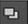

After you’ve drawn strokes/shapes, you can edit their order and group them with the Stroke/Shape list in the RotoPaint properties panel. By default, the newest stroke/shape/group appears on top of the list, and your strokes/shapes are named according to their type (for example, "Bezier1" or "Smear2").
Using the list, you can also select strokes/shapes/groups and edit them with the various controls in the properties panel. Some controls can be applied to groups, some can’t. Some controls also can only be applied to strokes or shapes (these are grouped under the Stroke and Shape control tabs respectively). If a control can’t be applied to a group, it is grayed out if you have a group selected in the stroke/shape list.
The stroke/shape list provides an overview of existing parameters, showing, for example, whether the item is locked, set invisible, or whether it has motion blur applied to it. Some controls can also be edited directly in the overview by clicking on their icon.
You can edit the stroke/shape list in many ways, and use it to adjust strokes/shapes and how they’re displayed in the Viewer.
• You can reorder the columns in the stroke/shape list by dragging and dropping them.
• You can create groups for sets of strokes/shapes in the stroke/shape list by clicking the Add button  below the list. This creates a subfolder, named “Layer1” by default, and you can drag and drop strokes/shapes to this folder to group them. After strokes/shapes have been grouped, you can edit them as a group and they move together if you change their place in the Viewer. Every group also has its own transformation overlay, which you can use to move the group.
below the list. This creates a subfolder, named “Layer1” by default, and you can drag and drop strokes/shapes to this folder to group them. After strokes/shapes have been grouped, you can edit them as a group and they move together if you change their place in the Viewer. Every group also has its own transformation overlay, which you can use to move the group.
• You can remove a stroke/shape or a group by clicking the Remove button under the stroke/shape list.
• If you want to rename any of the strokes, shapes, or groups, double-click on the name while the item is selected, and give your item a new name. The name has to be unique, so you can’t give two items the same name.
• You can also cut, copy, and paste strokes and shapes by right-clicking on them in the control panel and using the copy > curve, cut > curve, and paste > spline options in the menu that appears.
For information on copying, cutting and pasting shapes and points, see Copying, Pasting, and Cutting Stroke Positions; or for animated shapes and points, see Animating Strokes/Shapes. Alternatively, to copy, cut, or paste shape and point attributes only, see Editing Existing Stroke/Shape Splines.
NOTE: You cannot use Ctrl/Cmd+C or Ctrl/Cmd+V in the control panel to copy and paste shapes. You must use the right-click menu.
• You can duplicate strokes/shapes by right-clicking on them and selecting duplicate. A new stroke/shape is created with the same spline, animation, and attributes as the one you selected.
• You can hide a stroke, shape, or group by clicking the Visible icon  in the stroke/shape list. You can still edit an invisible stroke/shape and view its position in the Viewer.
in the stroke/shape list. You can still edit an invisible stroke/shape and view its position in the Viewer.
• You can lock strokes/shapes to prevent them from being edited. To lock an item in the stroke/shape list, click the Lock column in the list. A lock icon  appears next to the Visible icon.
appears next to the Visible icon.
• You can select the color in which you want the outline of your stroke/shape to appear in the Viewer. Click the Overlay column and select your overlay color. To be able to see the splines for all paint strokes in the Viewer, you need to activate one of the Select tools in the RotoPaint toolbar and click in the tool settings.
• You can change the color of your stroke/shape in the stroke/shape list by clicking the Color column  and using the color picker to select the color.
and using the color picker to select the color.
• You can invert a shape using the Invert column  . With your shape selected, click in the Invert column to toggle between inverted and uninverted modes.
. With your shape selected, click in the Invert column to toggle between inverted and uninverted modes.
• You can select a blending mode for your stroke/shape using the Blending column . With your shape selected, click the Blending column and select the mode you want to apply.
• You can apply shape motion blur using the Motion blur column  . With your shape selected, click the Motion blur column to toggle the motion blur effect.
. With your shape selected, click the Motion blur column to toggle the motion blur effect.
See Adding Motion Blur for more information on shape and global motion blur.
• You can specify the frame range of certain strokes and shapes by navigating to the stroke/shape list of the RotoPaint node, and right-clicking all under the Life column. Select frame range from the pop-up menu, and specify the frame range desired in the Set frame range dialog.
By default, new shapes and strokes are set to all on creation.
TIP: To undo and redo any changes you’ve made with the RotoPaint node, use the Undo and Redo buttons on top of the properties panel. Undo uses a cache memory of your changes, so at any time you can undo and redo all the changes you’ve made since you last opened your project.
|
|